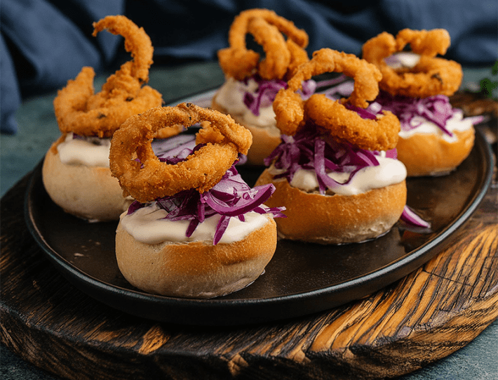

Fifteenth-century explorer Christopher Columbus was certain that his expedition had been cursed. Sailing across the Caribbean Sea with four ships in his fleet, a series of brutal storms kept the flotilla at the mercy of the wind, rain, thunder, and waves for nearly three months, preventing the vessels from reaching safe harbor. As he wrote in a letter in 1503, “It seemed as if it were the end of the world.”
Under the chaotic waves, a more insidious threat was destroying his ships from within. Like a Biblical swarm set loose in the ocean depths, thousands of hungry worm-like animals gnawed at the wooden boards of his hulls. The ravenous beasts could grow to a foot in length in just six months. “My ships were pierced by borers more than a honey-comb,” Columbus later wrote.* “With three pumps, and the use of pots and kettles, we could scarcely clear the water that came into the ship, there being no remedy but this for the mischief done by the ship-worm.”
Battered by storm and made porous by the shipworm, Columbus’ ships were left stranded on an island that would come to be known as Jamaica. In an age before iron and steel hulls, his plight was a common experience for any voyage; if you build something out of wood and soak it in the ocean for long enough, it will get eaten by shipworms. From the Ancient Greeks to the Spanish Armada, boat-builders not only had to make a vessel sea-worthy but also attempt to make it shipworm-proof. Hulls were coated in tar, animal hair, seal oil, lead, copper, and, in the 15th century, a second layer of wood that was bolted to the outside the actual hull—a sacrificial offering to the insatiable wood-boring worms of the ocean.
Just as shipworms did not exactly evolve to eat ships, they are also not exactly worms.
Even today, shipworms eat piers, breakwaters, and pilings. At a cost of $300 million, the foundations underneath Brooklyn Bridge Park, for example, are presently being wrapped with concrete or coated with epoxy resin in order to stop these animals from collapsing this sprawling structure near New York City’s iconic span into the East River.
Just as shipworms did not exactly evolve to eat ships, they are also not exactly worms. Members of the Teredo genus, these animals are mollusks most closely related to clams. The two valves of their shell aren’t used for protection but as sharp jaws able to scrape through even the toughest oak. Their long, worm-like body is protected by the burrow it excavates in a piece of wood—whether a floating ship, a pier piling, or a sunken tree trunk.
It was the shipworms’ insatiable appetite for all things wooden that caught the attention of David Willer, a scientist who studies sustainable aquaculture at the University of Cambridge. Fast growing, able to subsist entirely on wood, and with little investment in a biologically costly large shell, the animals seemed to him an intriguing and promising candidate for a big problem: Helping to feed the world. He suggests they might be an unlikely means for tackling far reaching problems of hunger, malnutrition, and a global food system that contributes about 26 percent of humanity’s greenhouse gas emissions. In other words, he sees the shipworm very differently from the mariners who have long cursed the animals: not as scourge but as savior. With this in mind, he has a rebranding suggestion: When prepared for human consumption, he calls them “naked clams.”
Shipworms don’t dine on ships out of spite. For those organisms that can stomach it, wood is nutritious stuff. It is made from lignocellulose, a natural polymer composed of closely packed chains of cellulose wrapped in a mesh of lignin and hemicellulose. Hard to break, it is even harder to digest. But for any organism that has evolved the ability to do so, the rewards are well worth their efforts. Cellulose is the most abundant biological polymer on Earth, and it is made entirely from repeated linked molecules of glucose—sugar. “If you think of an ice lolly,” says Simon Cragg, a researcher who studies wood-borers at the University of Portsmouth, “the biggest energy potential is in the little stick.”
To turn wood into glucose, the ancestor of modern shipworms (and a deep-sea group of Teridinids known as Xylophagids) formed an alliance with bacteria that are capable of digesting lignocellulose. While symbiotic relationships are common across the tree of life—grass-digesting bacteria inside the rumen of cows and sheep, for example—the shipworms’ alliance is a bizarre one. Their symbiotic bacteria are kept separate from the digestive system, contained within cells in their gills, which span most of their body’s length. “It’s the equivalent of us having bacteria in our lungs that provide us with the ability to digest our food,” says Reuben Shipway, a shipworm taxonomist who, in 2021, co-founded the Naked Clam project with Willer. They aim to spin up an entirely novel sector of the robust global aquaculture market by capitalizing on the shipworm’s unique biology. “They’re the only animals that do this.”

WHAT'S IN A NAME?: When preparing shipworms for human consumption, David Willer calls them "naked clams" to make them seem more palatable. And a fancy presentation, like in this shipworm dish, doesn't hurt either. Courtesy of David Willer.
Crucially, only the enzymes that can break down wood enter the digestive system from a shipworm’s gills, a hypothesis first proposed by a scientist in the 19th century but only confirmed in 2022. What may seem unnecessarily complex is actually an evolutionary sleight-of-hand that favors the shipworm. Keeping their bacterial helpers away from their woody banquet, the host organism retains control of the riches, keeping their bacterial symbionts just happy enough on scraps while they consume the lion’s share of the sugar.
With these tactics and when surrounded by their food, shipworms can grow up to 20 times faster than the blue mussel, a commercially grown bivalve eaten across the globe. This extreme growth rate, combined with its bottomless appetite for the indigestible, also makes shipworms one of the elite oceanic recyclers, able to transform a sunken tree trunk into a protein-rich buffet that can, in turn, help feed their predators and surrounding ecosystems.
All of these ideas coalesced into an unconventional plan in Willer’s mind. Why not grow these naked clams as an even more efficient food source? Perhaps in shipping containers or along coastlines. This, he thinks, could help feed the 1o billion or so people projected to live on Earth by 2050, and also tackle the increasing rates of food poverty and malnutrition in the shorter term.
The history of shipworm aquaculture predates Willer’s naked clam project. Actually by quite a bit. Roughly 8,000 years ago, in what could be the first form of aquaculture, Indigenous people living in and around what would later be named Sydney, Australia, sunk branches and trunks of swamp oaks to grow their own local supply of shipworms. The name of these people—the Cabrogal—literally means “the shipworm clan.” In Southeast Asia, shipworms are still harvested from mangrove roots at low tide and eaten raw with a sprinkling of salt, chili, and calamansi (a citrus fruit similar to lime). Known in Thailand as tamilok, they are also eaten in stews and battered like calamari. Shipworms are even added to halo-halo, a popular type of ice cream in the Philippines.
When prepared for human consumption, Willer calls them “naked clams.”
Shipworms are also reasonably nutritious. Willer’s own analyses have found that naked clams are high in DHA omega acid, contain more protein than beef, and, like other animal-based products, offer micronutrients such as vitamin B12, selenium, iron, and zinc.
Willer says that he seeks to expand the appetite for shipworms across the globe. Willer enjoys eating them raw, himself, describing it as a true connoisseur: “a bit like a whiskey that holds onto the taste of wood.” Working with professional chefs, Willer is also developing some modern twists on this seafood. Battered and fried, chopped into meat-style chunks, or packed into burgers, modern processing could enhance the flavor of shipworms while also making them more approachable to Western consumers. He has even experimented with injecting garlic butter microcapsules into tanks containing shipworms, a flavoring that is then suffused throughout the naked clam’s body.
If Willer manages to get widespread shipworm aquaculture off the ground, it would join a rapidly growing sector in the global food production landscape. From a few million tons in 1950, aquaculture now produces more than 90 million tons of fish and mollusks every year across the world.
But this surge in popularity—salmon, for example, is now being grown from Norway to Chile—has also led to widespread environmental concerns. Producing 1 kilogram of farmed salmon, for instance, requires catching and processing 4 kilograms of smaller fish pulled from some of the most productive food webs in the oceans. As Patricia Majluf, a biologist and vice president focused on Peru at the international conservation advocacy organization Oceana, and her colleagues wrote in the journal Science Advances in 2024, “most of this global supply, especially of FO [fish oil], now being used by the aquaculture industry purportedly to ‘contribute to global food security’ is, in fact, primarily being used to produce high-value, globally traded seafood that benefits only the few who can afford it.”
Eating lower in the food chain can be less environmentally damaging than eating large predatory fish (such as salmon and tuna) because smaller fish require fewer inputs of food and can grow and reproduce faster, bolstering their recovery from potential overfishing. And growing and consuming any bivalve is often even more sustainable. As an additional environmental asset, bivalves also reduce levels of dissolved nitrogen and phosphorus, compounds that can fuel toxic algal blooms.
But even these apparent benefits and a long history of shipworms as food doesn’t mean that more people will accept them, even with their rebranding. “It is difficult to predict consumer acceptance,” Birgit Rumpold, a researcher who studies insects as food at Technical University of Berlin, tells me via email. “In the end, [the] key factor is always taste. But disgust, food neophobia, and food culture are also of great importance.” She adds that, like with insects, shipworms could also be grown to feed other animals or farmed fish.
In 2026, Willer has plans for his first large-scale aquaculture project, an underwater farm of mussels, shipworms, and marine algae called sugar kelp common in Asian cuisine on the north coast of Devon in southwest England. With long stretches of sandy beaches, this area is famous for its relentless wind and waves, a place where the Atlantic Ocean meets the land with a running hug. Setting sail from western Spain in the 15th century, the waves that Columbus first met would have been much the same. But here, the shipworm is far from a scourge but instead an unlikely glimmer of hope. 
Lead image: Ekaterina Gerasimchuk / Shutterstock
Footnote
*While Columbus’s legacy is tarnished by the cruelty and callousness he showed the Indigenous people he encountered in the New World, he did keep good ship’s logs, some of which were preserved, giving us a window into nautical troubles of the time.
References
- Original Article: https://nautil.us/naked-clams-and-sunken-ships-1243689/